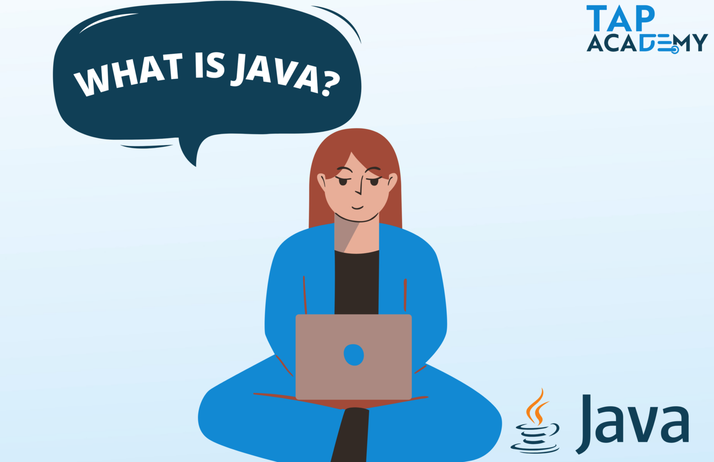

08069878321
hello@thetapacedemy.com
Home
Courses
Student Reviews
Blogs
Placements
Contact us
Get Started
What is Java

JAVA
Platform Independence
: Java code is compiled into an intermediate bytecode, which is executed by the JVM.
This bytecode can run on any platform that has a compatible JVM, making Java a "write once, run anywhere" language.
Object-Oriented
:Java is based on the object-oriented programming paradigm, which promotes the use of classes and objects to organize code.
Automatic Memory Management
: Java uses a garbage collector to automatically manage memory, which helps prevent memory leaks and makes it more developer-friendly.
Security
: Java has strong security features, including a built-in security manager and sandboxing to protect against malicious code.
Features of Java Explained
java is a straightforward programming language since it is simple to learn and comprehend.
Java uses implicit pointers, making it a secure programming language.
Java code does not need to be constantly compiled in order to execute on a variety of systems.
Java has strong memory management, making it a robust programming language.
What is Full Stack Development
Full Stack Development
: Full-stack developers work on the front end, which is the part of the application that users interact with directly. This involves creating user interfaces,
web pages, and ensuring a responsive and visually appealing user experience.
Back-End Development
Back-end development focuses on the server-side of the application,
including server logic, databases, and application functionality. Full-stack developers need to be skilled in server-side programming languages
and frameworks like Java, Python, Ruby on Rails, Node.js, or PHP. They also work with databases (SQL and NoSQL) to store and retrieve data.
Databases
:Understanding and working with databases is crucial for full-stack developers.
This includes designing database schemas, writing SQL queries, and interacting with databases using technologies
like MySQL, PostgreSQL, MongoDB, or other database management systems.
Server Management
:Full-stack developers should be familiar with server management and deployment.
This involves configuring and maintaining web servers, understanding networking, and deploying applications to production environments.
Tools like Docker and cloud platforms (e.g., AWS, Azure, or Google Cloud) are often used for this purpose.
APIs (Application Programming Interfaces)
: Full-stack developers often work with APIs to integrate their applications with
external services, data sources, and third-party platforms.
Security: Full-stack developers should have a good understanding of web application security best practices to protect against
common vulnerabilities, such as cross-site scripting (XSS), SQL injection, and data breaches.
What is Data Structure and Algorithm
Arrays: A collection of elements, each identified by an index or a key.
Linked Lists: A linear data structure in which elements are stored in nodes,
and each node points to the next one.
Stacks: A data structure that follows the Last-In-First-Out (LIFO) principle.
Queues: A data structure that follows the First-In-First-Out (FIFO) principle.
Trees: Hierarchical data structures with a root node and child nodes,
including binary trees, AVL trees, and more.
Graphs: A collection of nodes connected by edges, allowing for complex relationships between data.
Hash Tables: A data structure that provides fast data retrieval by mapping keys to values using a hash function.
How to build Logic in Programming
Understand the Problem:Start by thoroughly understanding the problem you need to solve. Analyze the requirements and constraints.
Plan Your Approach: Before you start coding, create a high-level plan or algorithm for solving the problem. This plan should outline the major steps
and decisions your program will make to achieve the desired outcome.
Divide and Conquer: Break down the problem into smaller, more manageable sub-problems. This process is often called decomposition.
Pseudocode: Write pseudocode to outline your program's logic. Pseudocode is a plain-English description of the steps your
code will take. It helps you solidify your plan before you start coding.
Use Flowcharts: Flowcharts are visual representations of a program's logic. They can help you visualize the flow
of control and data in your code. Creating a flowchart can be especially helpful for complex problems.
Database developer salary in 2023
The average salary for a Database Developer in US is $102,840.
The average additional cash compensation for a Database Developer
in US is $9,041. The average total compensation for a Database Developer in US is $111,881.
 Home
Courses
Student Reviews
Blogs
Placements
Contact us
Home
Courses
Student Reviews
Blogs
Placements
Contact us